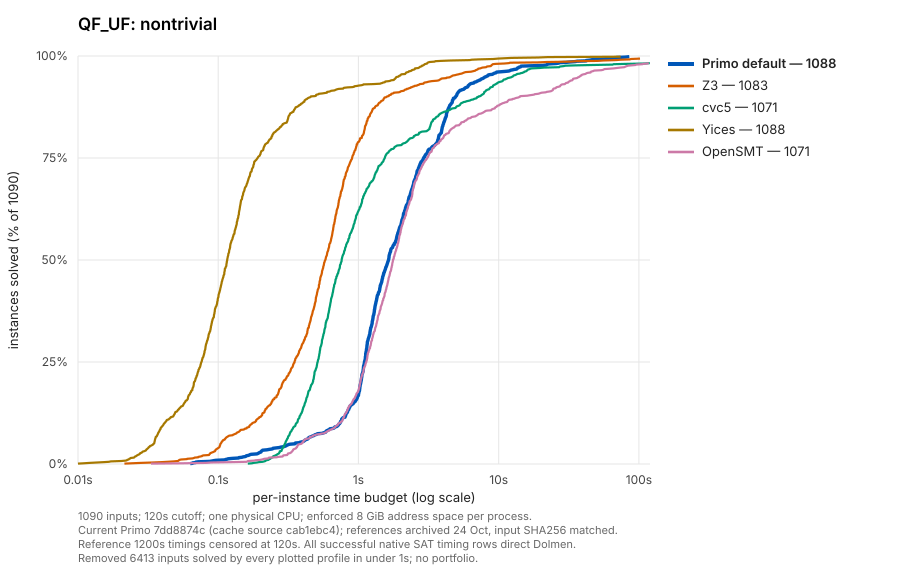
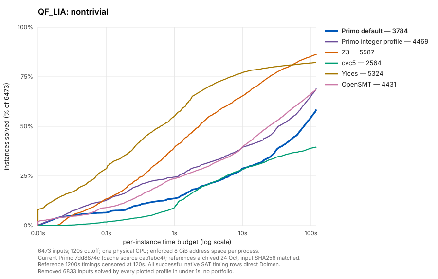
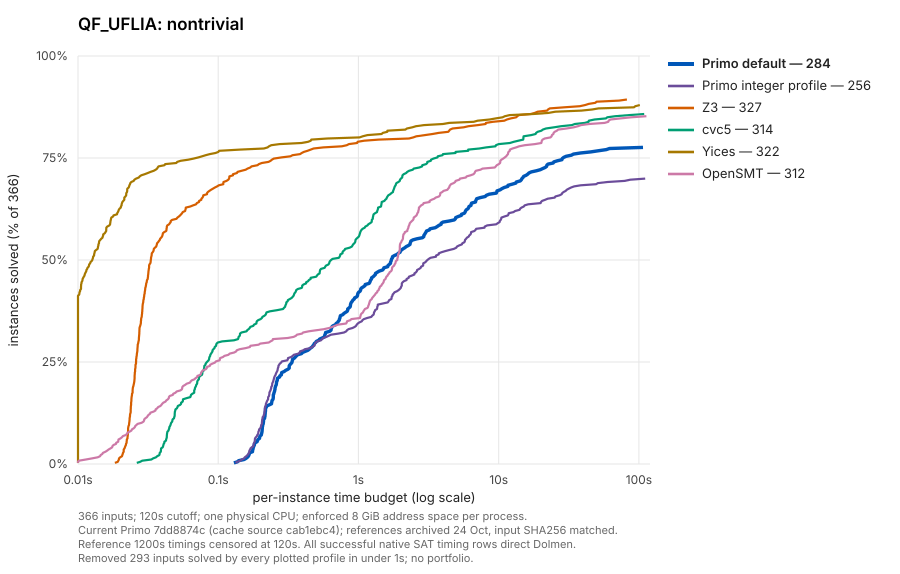

Primo and archived references ·120 seconds
Blue: current defaults. Purple: optional fixed integer profile. Shared colours, log time axis and 0–100% solved axis. Full and filtered denominators differ. Historical references are reused with matching input hashes and 8 GiB limits; dates differ. No per-input portfolio. Quantified UF is outside this report.
QF_UF


| Solver | Solved | SAT | UNSAT | Timeout | Unknown | OOM | Error | PAR2 sum |
|---|
| Primo default | 7501 | 3142 | 4359 | 2 | 0 | 0 | 0 | 4866.8 |
| Z3 | 7496 | 3142 | 4354 | 7 | 0 | 0 | 0 | 3670.64 |
| cvc5 | 7484 | 3142 | 4342 | 19 | 0 | 0 | 0 | 7886.63 |
| Yices | 7501 | 3142 | 4359 | 2 | 0 | 0 | 0 | 1054.4 |
| OpenSMT | 7484 | 3142 | 4342 | 19 | 0 | 0 | 0 | 11141.92 |
QF_LRA
| Solver | Solved | SAT | UNSAT | Timeout | Unknown | OOM | Error | PAR2 sum |
|---|
| Primo default | 1642 | 983 | 659 | 111 | 0 | 0 | 0 | 37040.02 |
| Z3 | 1516 | 927 | 589 | 237 | 0 | 0 | 0 | 70673.12 |
| cvc5 | 1394 | 837 | 557 | 359 | 0 | 0 | 0 | 102107.01 |
| Yices | 1605 | 978 | 627 | 148 | 0 | 0 | 0 | 43599.67 |
| OpenSMT | 1623 | 948 | 675 | 130 | 0 | 0 | 0 | 41173.02 |
QF_LIA


| Solver | Solved | SAT | UNSAT | Timeout | Unknown | OOM | Error | PAR2 sum |
|---|
| Primo default | 10617 | 7024 | 3593 | 1803 | 498 | 388 | 0 | 759013.65 |
| Primo integer profile | 11302 | 7656 | 3646 | 1288 | 328 | 388 | 0 | 593372.51 |
| Z3 | 12420 | 7977 | 4443 | 886 | 0 | 0 | 0 | 271334.95 |
| cvc5 | 9397 | 6620 | 2777 | 3848 | 0 | 27 | 34 | 973085.16 |
| Yices | 12157 | 7643 | 4514 | 1149 | 0 | 0 | 0 | 293140.97 |
| OpenSMT | 11264 | 7070 | 4194 | 2021 | 0 | 0 | 21 | 578159.47 |
QF_UFLRA
| Solver | Solved | SAT | UNSAT | Timeout | Unknown | OOM | Error | PAR2 sum |
|---|
| Primo default | 1271 | 760 | 511 | 7 | 0 | 6 | 0 | 3969.97 |
| Z3 | 1253 | 752 | 501 | 31 | 0 | 0 | 0 | 7946.21 |
| cvc5 | 1273 | 762 | 511 | 10 | 0 | 1 | 0 | 3587.96 |
| Yices | 1276 | 765 | 511 | 8 | 0 | 0 | 0 | 1997.56 |
| OpenSMT | 1265 | 754 | 511 | 18 | 0 | 0 | 1 | 6096.07 |
QF_UFLIA


| Solver | Solved | SAT | UNSAT | Timeout | Unknown | OOM | Error | PAR2 sum |
|---|
| Primo default | 577 | 407 | 170 | 82 | 0 | 0 | 0 | 21102.74 |
| Primo integer profile | 549 | 379 | 170 | 110 | 0 | 0 | 0 | 27903.5 |
| Z3 | 620 | 430 | 190 | 39 | 0 | 0 | 0 | 10072.68 |
| cvc5 | 607 | 421 | 186 | 52 | 0 | 0 | 0 | 13671.17 |
| Yices | 615 | 422 | 193 | 44 | 0 | 0 | 0 | 11155.95 |
| OpenSMT | 605 | 418 | 187 | 54 | 0 | 0 | 0 | 14629.97 |